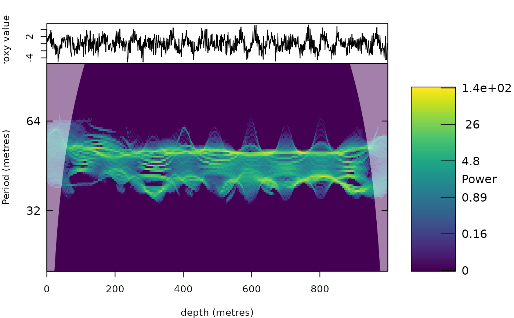

Multitaper synchrosqueezing (ConceFT) of a record
Source:R/analyse_conceft.R, R/zzz_aliases_american.R
analyse_conceft.RdComputes the "Concentration of Frequency and Time" (ConceFT) representation of Daubechies, Wang and Wu
(2016), a multitaper version of the wavelet synchrosqueezing transform that is robust against noise. The synchrosqueezed
transform of a noisy record contains spurious short ridges because noise also has an instantaneous frequency.
ConceFT uses a set of K orthonormal generalised Morse wavelets (Olhede and Walden 2002) and computes the
synchrosqueezed transform for many random linear combinations of them (random unit vectors). The noise in these
transforms is (nearly) independent while the ridges of the cycles are the same, so the average keeps the cycles and
averages the noise away, with much less broadening than averaging the scalograms of the separate wavelets
(method = "multitaper", which is also available).
Usage
analyse_conceft(
data = NULL,
lowerPeriod = 2,
upperPeriod = 1024,
dj = 1/100,
gamma = 3,
beta = 20,
K = 2,
n_comb = 20,
method = c("conceft", "multitaper"),
sst_order = 1,
n_iter = 1,
threshold = "riskshrink",
seed = 1,
verbose = FALSE
)
analyze_conceft(
data = NULL,
lowerPeriod = 2,
upperPeriod = 1024,
dj = 1/100,
gamma = 3,
beta = 20,
K = 2,
n_comb = 20,
method = c("conceft", "multitaper"),
sst_order = 1,
n_iter = 1,
threshold = "riskshrink",
seed = 1,
verbose = FALSE
)Arguments
- data
Input record: a matrix or data frame with depth/time in column 1 and the proxy value in column 2 (further columns are ignored). Incomplete rows are removed, the rows are sorted by depth/time, the record is linearly interpolated to the median sampling interval and standardised. Required (
Default=NULLgives an error).- lowerPeriod, upperPeriod
Shortest and longest period of the transform, in the same unit as the depth/time column of
data(numeric, 0 <lowerPeriod<upperPeriod;lowerPeriodat least twice the sampling interval). Defaults:lowerPeriod:Default=2;upperPeriod:Default=1024.- dj
Spacing of the period axis in octaves (numeric, > 0;
1/xgives x periods per doubling of the period).Default=1/100.- gamma, beta
Parameters gamma and beta of the generalised Morse wavelets (numeric, > 0); the defaults are Lilly's default family (Daubechies et al. 2016 used gamma = 9, beta = 30). A larger beta gives longer wavelets (better period resolution, worse depth/time resolution). Defaults:
gamma:Default=3;beta:Default=20.- K
Number of orthonormal Morse wavelets (tapers) of orders 0 to K-1 (integer, >= 1). More tapers suppress noise better but broaden the ridges.
Default=2.- n_comb
Number of random combinations of the tapers whose synchrosqueezed transforms are averaged (integer, >= 1); only used when
method="conceft". The first combination is always the zero-order Morse wavelet itself. More combinations average out more noise at a higher computation time.Default=20.- method
Averaging method (character), one of
"conceft"(average overn_combrandom unit-vector combinations of the K tapers) or"multitaper"(average of the synchrosqueezed transforms of the K orthonormal wavelets themselves).Default="conceft"(the first element ofc("conceft", "multitaper")).- sst_order
Order of the synchrosqueezing of every combination (numeric,
1or2), seeanalyse_wavelet_sst.Default=1.- n_iter
Number of iterations of the frequency reassignment of every combination (integer, >= 1), see
analyse_wavelet_sst.Default=1.- threshold
Noise threshold of the synchrosqueezing:
"riskshrink","none"or a number (numeric, in standard deviations of the standardised record), seeanalyse_wavelet_sst.Default="riskshrink".- seed
Seed of the random number generator used to draw the random combinations (integer), so that results are reproducible; the previous random state is restored afterwards. Only used when
method="conceft".Default=1.- verbose
Print a message after each combination (logical, TRUE or FALSE).
Default=FALSE.
Value
A list of class analyze.wavelet (see analyse_wavelet_sst) with the averaged power in
Power; Wave has this power with the phase of the synchrosqueezed transform of the first (zero order)
Morse wavelet, so the extraction functions can use it.
References
Daubechies, I., Wang, Y., Wu, H.-T., 2016. ConceFT: concentration of frequency and time via a multitapered synchrosqueezed transform. Philosophical Transactions of the Royal Society A 374, 20150193.
Olhede, S.C., Walden, A.T., 2002. Generalized Morse wavelets. IEEE Transactions on Signal Processing 50, 2661-2670.
Lilly, J.M., Olhede, S.C., 2012. Generalized Morse wavelets as a superfamily of analytic wavelets. IEEE Transactions on Signal Processing 60, 6036-6041.
Examples
# \donttest{
z <- 0:999
x <- sin(2 * pi * z / 40) + sin(2 * pi * z / 50) + rnorm(length(z), sd = 1.5)
cf <- analyse_conceft(data.frame(z, x), lowerPeriod = 20, upperPeriod = 100, dj = 1 / 50,
n_comb = 10)
plot_wavelet(cf)

# }